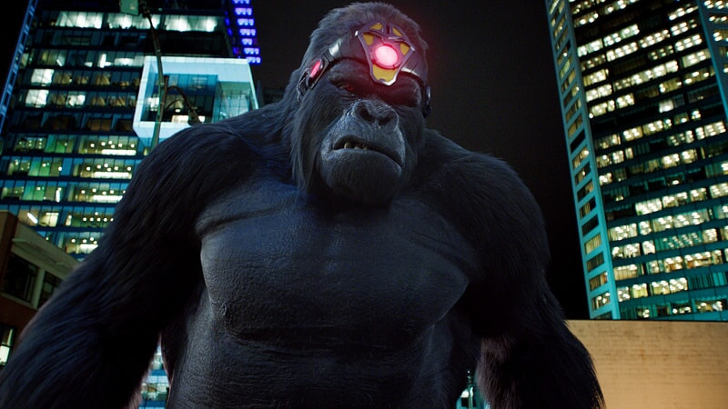
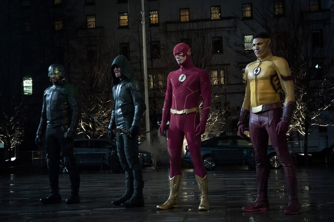
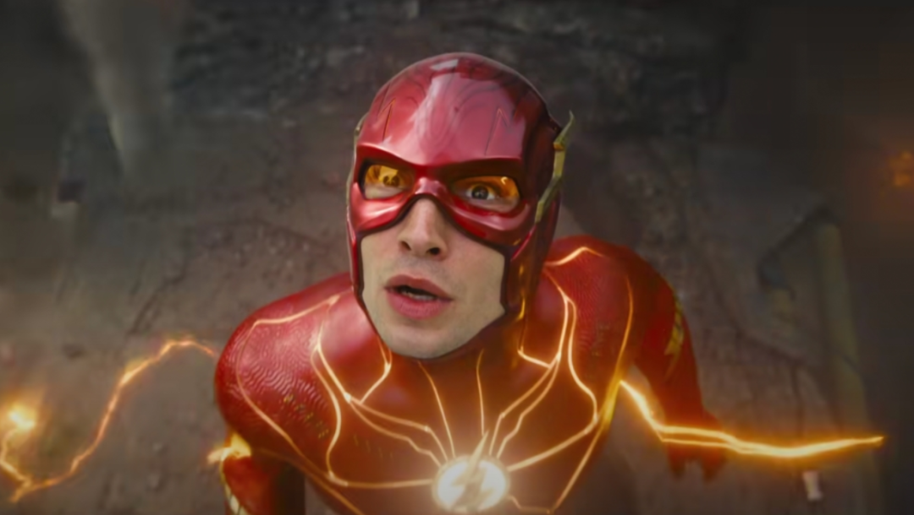

本剧是 DC 宇宙内部的罪案伪纪录片，由《星球日报》吉米・奥尔森执导拍摄。吉米·塔特罗（Jimmy Tatro）已正式与 DC 签约，将在 HBO 出品的《人民诉大猩猩格鲁德》中饰演大猩猩格鲁德（Gorilla Grodd）。

剧情设定在大都会。拥有超高智商的大猩猩格鲁德，被控谋杀了自己的父亲：猩猩城的国王，罪名成立并且入狱。而吉米·奥尔森（Skyler Gisondo 饰，就是2025年《超人》里那个倒霉又讨喜的记者）决定重启这桩陈年旧案，用整整8集的"真实罪案纪录片"，去追问一个要命的问题：格鲁德，到底是不是被冤枉的？
格鲁德在 DC 漫画里是什么定位？
闪电侠最著名的反派之一。 一只因神秘陨石获得天才智力与心灵感应能力的超级智能大猩猩，统治着隐藏的高科技国度"猩猩城"，并屡次试图征服人类世界。他在 CW 的《闪电侠》里由 David Sobolov 配音并且出场过多次。

如今格鲁德正式进入DCU，也意味着闪电侠的宿敌宇宙开始搭建。但是 DCU 至今，还没有闪电侠。只有在 2025 年的动画《生物突击队》里，在一次幻象里给了个一闪而过的镜头，这就确认了这个漫画宇宙里存在闪电侠，之后就再也没有出现过闪电侠了。
另外，制片人詹姆斯・古恩明确说过：闪电侠和海王未来两年内不会出现。

那么，格鲁德来了，吉米·奥尔森来了，闪电侠还会远吗？
至少现在我们知道：DCU的闪电侠宇宙，已经从反派开始正式启动了。